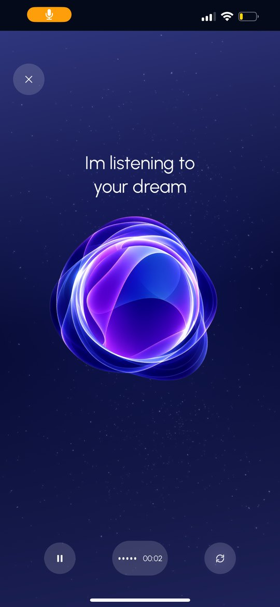
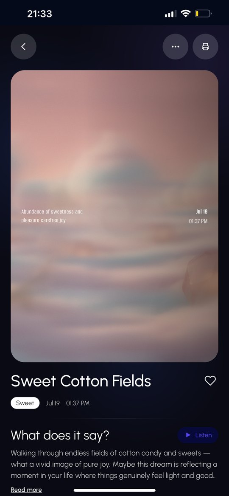
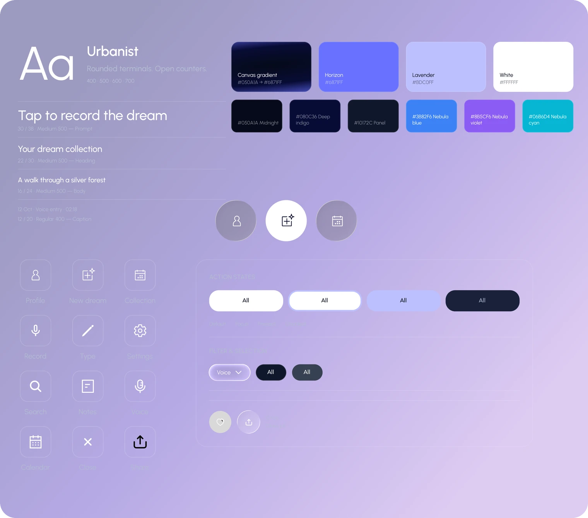

A bilingual app that captures a dream before it's forgotten, finds the patterns that repeat across your nights, and gives each dream a visual, meaningful interpretation.
- Role
- Solo: research, UX, UI, build
- Platform
- Mobile, Hebrew and English
- Type
- Self initiated
- Year
- 2025–26
The problem
Why do I keep dreaming this?
Most people have asked it. Dreams repeat their symbols, but the feeling fades within minutes, so the pattern never gets noticed.
The app catches the dream before it's forgotten, and shows what keeps coming back.
Who it's for
For anyone who wants a personal dream journal: a private place to record every dream and slowly discover the patterns in their sleep.
Research : how to read a dream
I grounded the analysis in three things, and each one shaped the app
- Dream criteria. Each dream is read by type, intensity, frequency, realism and how it feels after waking. So every dream is broken down the same way, which is what makes patterns visible over time.
- A symbol map. Drawing on Jungian readings: water as emotion, falling as loss of control, a chase as pressure, a house as the self. So the app can name what a symbol usually means.
- The dreamer's context. A symbol means something different to each person. So every reading combines the general meaning with the user's own associations.
All of it was tested against real, anonymized dream accounts.
UX decisions
Three calls shaped how the app feels to use.
01 — A calendar that's also a gallery
Tension A dream journal needs a timeline, but a list of entries is easy to forget.
Call Each night on the calendar shows its dream's generated image.
Why The calendar holds the timeline. The images make it worth revisiting.
02 — From single dreams to recurring patterns
Tension One dream explains a moment, not why the same themes keep returning.
Call Analyze dreams across months to surface recurring symbols and themes.
Why Only the long view can answer "Why do I keep dreaming this?"
03 — Voice first, writing one tap away
Tension Research showed speaking captures a dream faster, but some mornings writing feels right.
Call "Tap to record" as the main action, with "Write instead" always one tap away.
Why Less effort to catch a fading memory, without taking away the choice.
The concept: a loop, not a log
- 01CaptureVoice or text
- 02Break downSymbols, emotion, association
- 03InterpretGeneral and personal
- 04See itA generated image
- 05TrackPatterns over time
The tracking step is what separates it from a journal: recurring symbols and emotions surface on their own.
The design: nocturnal, soft, readable at 6 a.m.
A night-sky system of navy and violet gradients with frosted glass surfaces. Emotions are tagged in color so patterns are visible at a glance. The app is right-to-left first, with Hebrew as the primary language, and the onboarding copy is written to feel calm rather than clinical.





Building it myself
This was the first app I built on my own, and the first time I connected it to APIs. I designed it, then took it all the way to working code.
- Research & design01Research question
- 02Concept
- 03Design
- 04Design system
- 05Wireframes
- Build06Screens in codeTurning the Figma screens into real layouts is where CSS finally clicked for me.
- 07Image generation APIMy first API connection. I chose which image service to connect, then taught it how to turn a dream into an image, so every dream gets its own.
- 08Interpretation botClaude reads the dream and returns symbols, emotions and meaning as structured data.
- 09Voice recordingSpeaking the dream instead of typing it, wired into the same flow.
- 10Final resultA working app, with every piece connected.
A full design-token system and a written prompt guide let me move designs into code with exact values, not approximations. The analysis engine is a TypeScript service that uses Claude through the Anthropic SDK, with tool use to return structured output: symbols, emotions and interpretation as data the UI can render.
Key Learnings & Future Direction
Key Learnings
- 01Start with the build.
I designed first and learned the tools along the way. Today I'd start by learning how to build it and setting up the image and video generation, then move to design.
- 02A design system before code.
Every design change during implementation slowed me down. A system set up front would have saved that.
- 03Test every day, not once.
About 7 people used the app daily, and I improved it every day based on how they used it.
Future Direction
- 01Video instead of an image.
Users asked to see their dream as a video.
- 02Interpretation length.
Some wanted it shorter, others wanted more room for it. Next step: test both.
Reflection
TODO: 3–4 sentences in your voice. What was hardest about designing for something this personal, what building it yourself taught you, and what you'd change.